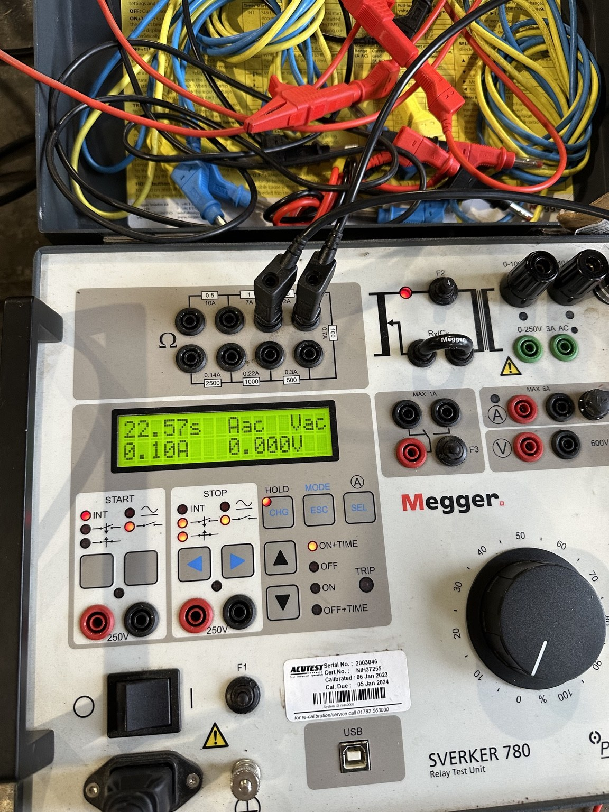
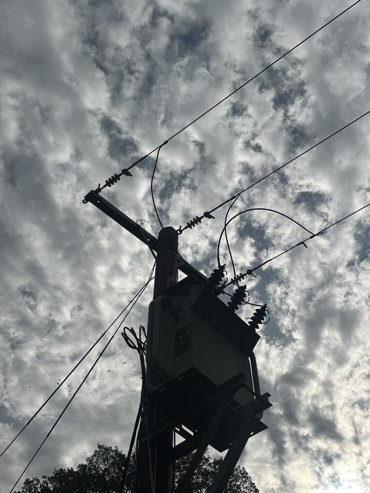

Utility heritage
Experience across multiple UK DNO environments, including network operations, asset replacement, fault restoration, commissioning and operational control.

Powertec Utilities Ltd
Specialist electrical engineering, commissioning and operational safety support for critical infrastructure across the UK and Europe.
We support project teams where electrical safety, programme delivery and system availability must work together.
Powertec's experience has grown from UK electricity distribution into demanding European data centre commissioning environments. That combination brings together disciplined operational control, electrical safety and practical project delivery.

Powertec's work has covered electricity distribution, HV project delivery and data centre commissioning. That breadth means we understand not only the immediate task, but the wider operational consequences of every switching, isolation, testing and energisation decision.
Experience across multiple UK DNO environments, including network operations, asset replacement, fault restoration, commissioning and operational control.
Current European data centre experience supporting electrical testing, commissioning, progressive energisation, safe systems of work and operational handover.
Project management of HV asset replacement, network refurbishment and commissioning programmes, including resourcing, logistics and cost control.

Our work is grounded in practical high voltage operations, commissioning, project delivery and electrical safety, developed on live utility networks and now carried into European data centre projects.
That combination means we understand both the engineering detail and the operational responsibility needed to move systems safely from construction through commissioning, energisation and handover.